Der Lehrpfad
Diese Website enthält Informationen und kleine Quize zum Landwirtschaftlichen Lehrpfad, zwischen Laudenbach und Himmelstadt. Die Website ist ein Projekt des JSG-Karlstadt in enger zusammenarbeit mit dem AELF-Karlstadt.
Stationen
Hier siehst du eine Übersicht der Stationen, die du auf dem Lehrpfad besuchen kannst. Klicke auf eine Station, um mehr Informationen zu erhalten.
Die Punkte, die du in den Quizzen gesammelt hast, kannst du mit deinen Freunden vergleichen oder später auch zurücksetzen, um die Quizze erneut zu spielen.
Setze hier deinen Fortschritt zurückInformationen
Ernährung
In der Podcast-Folge "Ernährung im Wandel - Herausforderungen und Tipps" diskutieren Sarah und Michael die Herausforderungen der modernen Ernährung wie Zeitmangel, verarbeitete Lebensmittel und Informationsüberflutung. Aber hört selbst ...
Unsere Ernährung ist eng mit der Landwirtschaft verbunden. Was wir essen, wächst auf Feldern, in Gewächshäusern oder wird durch Tierhaltung erzeugt: Der Ackerbau spielt eine zentrale Rolle in unserer Ernährung, denn er liefert die Grundlage für viele alltägliche Lebensmittel. Besonders wichtig sind Getreidearten wie Weizen, aus dem Brot, Nudeln und Gebäck hergestellt werden, sowie Roggen als klassisches Brotgetreide. Gerste dient vor allem als Tierfutter und ist unverzichtbar für die Bierherstellung, während Mais sowohl als Futtermittel, Speisemais als auch für Stärkeprodukte genutzt wird. Hafer findet sich in Form von Haferflocken und Müslis auf unseren Tellern und wird ebenfalls in der Tierfütterung eingesetzt. Neben Getreide versorgt der Ackerbau uns mit einer großen Vielfalt an Gemüse und Obst, darunter Kohl, Karotten, Tomaten, Salate, Äpfel und Beeren, die wichtige Vitamine und Nährstoffe liefern. Auch Hackfrüchte wie Kartoffeln sind ein bedeutendes Grundnahrungsmittel und dienen zudem als Stärkelieferant, während Zuckerrüben die Basis für die Zuckerproduktion bilden. Ergänzt wird der Ackerbau durch Öl- und Eiweißpflanzen. Raps liefert hochwertiges Speiseöl, und seine Rückstände werden als Futtermittel genutzt. Soja ist eine wichtige Eiweißquelle für Lebensmittel wie Tofu oder Sojamilch und spielt ebenfalls eine große Rolle in der Tierernährung. Sonnenblumen schließlich liefern sowohl Öl als auch schmackhafte Kerne. Insgesamt zeigt sich, wie vielfältig und unverzichtbar der Ackerbau für unsere tägliche Ernährung ist.

Zum QuizStandortsuche
Informationen zur Standortsuche kommen hier.
Mitwirkende
Webentwicklung
Hümmer Moritz
Quizdesign
...
Inhaltliche Recherche
...
Projektleitung
Kirsch Julian
Team
Binner Felix, Dirscherl Sina, Greindl Nela, Handel Klara, Hartmann Jonas, Hümmer Moritz, Kirchner Paula, Klühspies Julia, Küffner Mia, Röder Adrian, Schwarz Angelina, Spehnkuch Anna-Lena
Unterstützt durch das Amt für Ernährung, Landwirtschaft und Forsten (AELF) Karlstadt